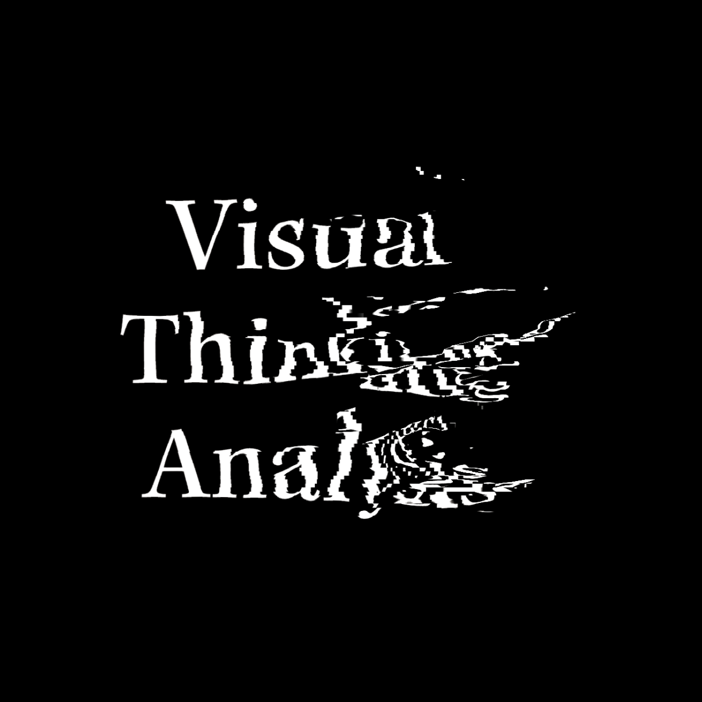
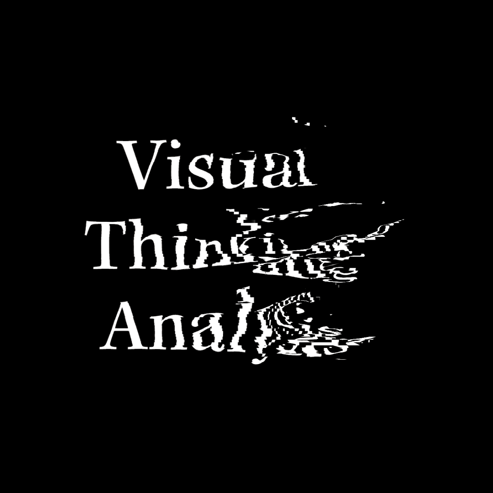

Visual Thinking Analysis
I'm excited about this photo because it shows not only the food but also the setting where and how people enjoy their meals. This photo was captured in my hometown, a place renowned for its diverse breakfast options...
 
